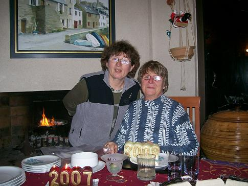

Recette n° 172 : saucisse de l'île de Molène
aux choux des Lices (tout ce qu'il y a de breton)
Les gens qui vivent tout près de Molène, au
Conquet par exemple, ont un sourire extraordinaire, n'est-ce pas ?
Ingrédients
pour 5 ou 6 personnes
- 1 beau chou vert pommé acheté au marché des
Lices le samedi matin à Rennes
- une belle saucisse (500 g environ) de l'île de Molène,
offerte par une filleule à son parrain bien-aimé
- 1 rutabaga ou 1 navet épluché et débité
en brunoise
- 1 gros oignon jaune piqué de 4 clous de girofle
- une grosse carotte découpée en rondelles
- une gousse d'ail d'Arleux écrasée au plat du couteau
- une cuiller à soupe de graisse d'oie des Landes (ou de canard)
ou de beurre de Guérande
- sel et poivre selon goût
- 2,5 litres d'eau

Préparation :
1 - démonter le chou, laver et débiter en tronçons
les feuilles
2 - les faire revenir ainsi que la carotte à la graisse d'oie
dans une sauteuse
3 - mettre 2,5 litres d'eau dans une ccotte-minute, y jeter chou,
carottes, oignon, ail, rutabaga, saucisse coupée en 8
tronçons
4 - fermer la cocotte-minute et mettre à cuire une heure
à partir du moment ou la soupape commence à tourner
5 - ouvrir la cocotte et assaisonner avec sel et poivre selon goût
6 - servir aussitôt
Observations :
1 - recette exécutée en janvier 2008 et
dégustée avec Annie Lefort-Bourdier (la filleule dont on
parle en début de recette)
2 - c'est un plat consistant qui peut être consommé en
soupe (c'est pour cette raison que j'avais mis autant d'eau) ou en plat
principal
3 - j'avais mis du rutabaga, mais son goût était
complètement masqué par celui du chou ; dommage !